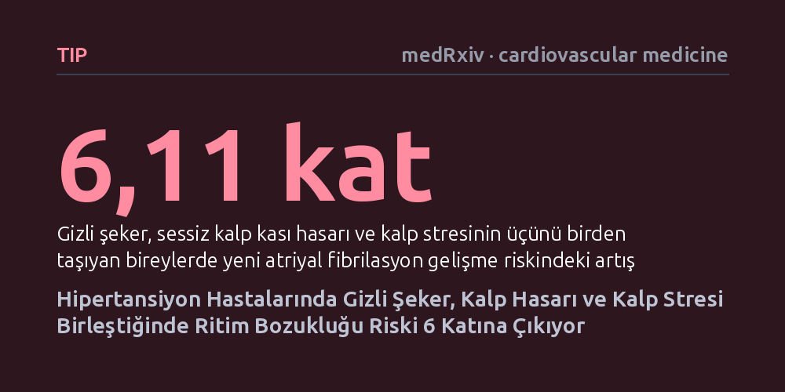

TIP · medRxiv · cardiovascular medicine · 2026-09-09
Hipertansiyon hastalarında gizli şeker, sessiz kalp kası hasarı ve kalp stresinin yeni ritim bozukluğu riskiyle bağlantısı 7.261 kişide araştırıldı. Her üç sorunu birden taşıyanlarda atriyal fibrilasyon riskinin 6 kat arttığı, her ek bozukluğun riski yüzde 82 yükselttiği saptandı.
Kalp ritim bozukluğunun birdenbire ortaya çıkmadığını; henüz klinik belirti vermeyen hafif şeker yüksekliği, sessiz kalp hasarı ve duvar geriliminin üst üste birikerek riski katladığını gösteriyor.

Atriyal fibrilasyon, kalbin üst odacıkları olan kulakçıkların düzenli kasılmak yerine kaotik ve düzensiz şekilde titreşmesiyle ortaya çıkan en yaygın ritim bozukluğudur. Bu durum yalnızca kalp çarpıntısı ve nefes darlığı yaratmakla kalmaz; kalbin içinde kan pıhtısı oluşma ihtimalini yükselterek inme ve kalp yetmezliği riskini belirgin şekilde artırır. Yüksek tansiyon bu ritim bozukluğunun en bilinen zeminlerinden biri olsa da, benzer tansiyon değerlerine sahip bireylerin neden sadece bazılarında ritim bozukluğu geliştiği sorusu hekimlerin önünde önemli bir bilinmeyen olarak durmaktadır.
Uzun süredir kalp ritim bozukluklarının arkasında yatan biyolojik süreçler tek tek ele alınıyordu. Örneğin yüksek kan şekerinin damarları ve dokuları yıprattığı, kalp kasındaki mikroskobik hasarların ileti yollarını bozduğu veya kalbin maruz kaldığı basınç stresinin kulakçık yapısını genişlettiği biliniyordu. Ancak bu metabolik ve yapısal etkenlerin klinik olarak belirgin bir hastalığa dönüşmeden önceki evrelerde nasıl bir etkileşim içinde olduğu ve birlikte var olduklarında riski ne derece büyüttüğü yeterince aydınlatılmamıştı.
Bu çalışma, yüksek tansiyonu olan ama henüz belirgin bir kalp yetmezliği veya diyabet tanısı almamış bireylerde, hücresel düzeydeki üç sessiz bozukluğun bir araya geldiğinde ritim bozukluğu riskini nasıl katladığını ortaya koymayı amaçlıyor.
Araştırmacılar, geniş kapsamlı bir klinik çalışma olan Sistolik Kan Basıncı Müdahale Denemesi'ne (SPRINT) dahil edilen 7.261 katılımcının verilerini inceledi. Çalışmanın tasarımında kritik bir filtre bulunuyordu: Başlangıçta atriyal fibrilasyon tanısı olanlar, aşikar diyabeti bulunanlar, daha önce inme geçirmiş veya sol karıncık kasılma gücü yüzde 35'in altına düşmüş ileri kalp yetmezliği olan kişiler araştırmaya dahil edilmedi. Böylece analiz, henüz ağır bir klinik tabloya sahip olmayan hipertansiyon hastalarına odaklanabildi.
Araştırma ekibi her katılımcıda üç farklı biyolojik alanı temsil eden kan belirteçlerini ölçtü. İlk olarak metabolik işlev bozukluğunun işareti olarak açlık kan şekeri değerlendirildi ve gizli şeker (prediyabet) varlığı saptandı. İkinci olarak, kalp kası hücrelerindeki mikroskobik ve sessiz hasarı yakalamak amacıyla kanda yüksek duyarlıklı kardiyak troponin I (hs-cTnI) seviyelerine bakıldı. Üçüncü olarak ise kalp odacıklarının maruz kaldığı mekanik gerilim ve hemodinamik yükü yansıtan NT-proBNP hormonu ölçülerek kalp stresi belirlendi.
Katılımcılar ortanca 3,76 yıl boyunca düzenli olarak takip edildi. Bu izlem süresince kimlerde yeni atriyal fibrilasyon geliştiği kaydedildi ve söz konusu üç biyobelirtecin tekil ve birleşik etkileri çok değişkenli istatistiksel modellerle mercek altına alındı.
Takip süresi boyunca toplam 174 katılımcıda yeni atriyal fibrilasyon geliştiği tespit edildi. Araştırmacılar yaş, cinsiyet ve diğer risk faktörlerini hesaba katarak yaptıkları düzeltmeler sonucunda, her üç göstergenin de ritim bozukluğuyla bağımsız bir ilişki sergilediğini buldu. Tek başına değerlendirildiğinde gizli şeker riski yüzde 48, sessiz kalp kası hasarı yüzde 84, kalp duvarı stresi ise yüzde 135 (2,35 kat) artırıyordu.
Ancak çalışmanın en dikkat çekici sonucu, bu anormal göstergelerin birikimli (kümülatif) yükü incelendiğinde ortaya çıktı. Katılımcıların taşıdığı anormal alan sayısı arttıkça ritim bozukluğu gelişme riski düzenli ve dik bir artış gösterdi. İstatistiksel modeller, listelenen üç alandan eklenen her bir ilave bozukluğun atriyal fibrilasyon riskini yüzde 82 oranında artırdığını ortaya koydu.
Tablonun en çarpıcı noktası ise her üç bozukluğu birden taşıyan bireylerde görüldü. Hem gizli şekeri bulunan, hem troponin değeri yüksek çıkan, hem de kalp stres hormonu artmış olan katılımcıların, bu alanların hiçbirinde anormallik bulunmayanlara kıyasla 6,11 kat daha yüksek ritim bozukluğu riski taşıdığı hesaplandı.
Elde edilen bulgular, hipertansiyon hastalarında ritim bozukluğu riskinin tek bir nedene indirgenemeyeceğini açıkça göstermektedir. Kalp sağlığını korumak yalnızca tansiyon aletindeki sayıları düşürmekten ibaret değildir; hafif metabolik sapmalar, sessiz hücresel yıpranmalar ve kalbin taşıdığı mekanik yük birbirini besleyerek kalbin elektriksel dengesini temelinden sarsabilmektedir. Yazarların ifadesiyle, bu sonuçlar "tamamlayıcı metabolik ve kardiyak anormalliklerin atriyal fibrilasyona yatkınlığı topluca karakterize ettiği çok alanlı bir çerçeveyi" desteklemektedir.
Henüz aşikar bir hastalık tablosu oluşmadan önce yapılacak hassas kan tahlilleri, gelecekte ritim bozukluğu açısından en kırılgan hastaların erkenden tespit edilmesine olanak tanıyabilir. Bu durum, yüksek tansiyon takibinde yalnızca tansiyonu değil, gizli şeker ve sessiz kalp hasarı belirteçlerini de içeren çok boyutlu bir risk taraması yaklaşımının önemini gündeme getirmektedir.